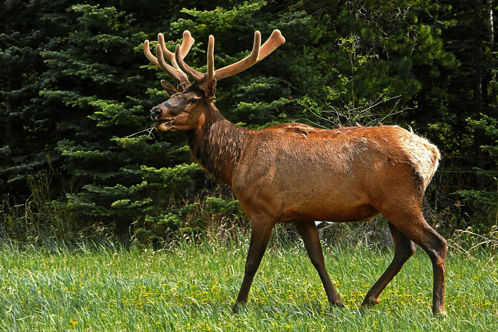

Elch
Elche gehören zur Familie der Hirsche und damit zu den Paarhufern. Sie sind die größten heute noch lebenden Hirsche und können ohne Mühe auf einen Menschen von oben herabschauen: Ihre Schulterhöhe beträgt bis zu 230 Zentimeter, vom Kopf bis zum Po messen sie bis zu 300 Zentimeter und sie wiegen zwischen 300 und 800 Kilogramm. Die Weibchen sind immer kleiner als die Männchen. Elche lassen sich auf den ersten Blick von anderen Hirscharten unterscheiden, weil sie im Verhältnis zu ihrem massigen Körper lange Beine haben: Diese messen 110 bis 120 Zentimeter. Brustkorb und Schulter sind sehr breit und muskulös, der hintere Teil des Körper fällt schräg nach unten ab. Typisch für Elchbullen ist das bis zu zwei Meter breite und bis zu 20 Kilogramm schwere Geweih. Es wird Schaufel genannt, weil die Fortsätze breit und schaufelartig geformt sind. Die Schaufel wird jedes Frühjahr abgeworfen und wächst bis zum Herbst wieder nach. Auffällig bei den Männchen ist auch der so genannte Elchbuckel auf den Schultern. Hier setzen viele große Muskeln und Sehnen an, die das Geweih tragen. Dieser Buckel ist vor allem bei den Männchen ausgeprägt, bei den Weibchen, die kein Geweih haben, ist er kleiner. Elche besitzen ein dickes, langes Fell aus ziemlich harten Haaren. Es ist rötlichbraun bis schwarzbraun und im Sommer dunkler als im Winter. An den Beinen ist das Fell sehr viel kürzer und heller. Die Ohren sind länglich-oval und laufen zu den Enden hin spitz zu, die Augen sind relativ klein. Unverkennbar ist die Schnauze: Die Oberlippe, die so genannte Muffel, ist sehr breit und hängt weit über die Unterlippe. Außerdem tragen sowohl Männchen als auch Weibchen, wenn sie erwachsen sind, einen 20 bis 25 Zentimeter langen Bart am Kinn. Der Schwanz ist winzig und misst gerade einmal fünf bis zehn Zentimeter. Elche sind Paarhufer. Ihre Hufe bestehen aus zwei Teilen, die durch eine Haut miteinander verbunden sind - die Haut ist einzigartig bei Elchen im Vergleich zu anderen Hirschen. Diese Haut verhindert, dass die Tiere im Schnee oder Morast einsinken.
Hirsch

Hirsche bilden eine große Familie innerhalb der Säugetiere. Die Bedeutung des lateinischen Namens „Cervidae“ ist „Geweihträger“. Alle ausgewachsenen Hirsch-Männchen tragen also ein Geweih. Eine Ausnahme bildet das Rentier, da tragen auch die Weibchen ein Geweih. Alle Hirsche ernähren sich von Pflanzen, vorwiegend von Gras, Blättern, Moos und den jungen Trieben von Nadelbäumen. Es gibt über 50 Arten von Hirschen auf der Welt. Der Rothirsch, der Damhirsch, das Reh, das Rentier und der Elch gehören zu dieser Familie und kommen auch in Europa vor. Hirsche gibt es auch in Asien sowie in Nordamerika und in Südamerika. Sogar in Afrika gibt es eine einzige Hirsch-Art, das ist der Berberhirsch. Wer im deutschen Sprachraum den Hirsch erwähnt, meint meist den Rothirsch, aber eigentlich ist das nicht ganz richtig. Der größte und schwerste Hirsch ist der Elch. Der kleinste ist der Südpudu. Er lebt in den Bergen Südamerikas und ist etwa so groß wie ein kleiner oder mittlerer Hund.
Rentier

Rentiere gehören zur Familie der Hirsche und bilden dort die Unterfamilie der Renhirsche. Sie werden 130 bis 220 Zentimeter lang. Die Schulterhöhe beträgt 80 bis 150 Zentimeter. Dabei wiegen sie zwischen 60 und 315 Kilogramm. Die Männchen werden meist sehr viel größer und schwerer als die Weibchen. Ihr Kopf und ihr Rumpf sind ziemlich lang, die Beine relativ hoch. Der Schwanz kurz, die Hufe breit. Im Gegensatz zu allen anderen Hirschen tragen bei den Rentieren aber auch die Weibchen ein Geweih. Die Männchen werfen ihr Geweih im Herbst ab, die Weibchen im Frühjahr. Bei beiden wächst das Geweih dann wieder neu nach. Die Stangen sind etwas abgeflacht. Sie haben eine helle Farbe und sind asymmetrisch gebaut. Dadurch unterscheidet sich das Rentier-Geweih von den Geweihen aller anderen Hirsche. Insgesamt ist das Geweih im Verhältnis zur Größe der Tiere sehr mächtig. Die Männchen besitzen am Hals einen Kehlsack, der als Schallverstärker dient. Die nordamerikanischen und grönländischen Unterarten haben an der Halsunterseite eine lange, weiße Mähne. Rentiere haben ein dichtes Fell, das im Sommer und Winter verschiedene Farben hat. Wo leben Rentiere? Rentiere leben in den nördlichsten Regionen Asiens, Europas und Nordamerikas. Dort bewohnen sie die polaren und subpolaren Regionen. Rentiere findet man in der Tundra und der Taiga, also in den nördlichsten Waldregionen.